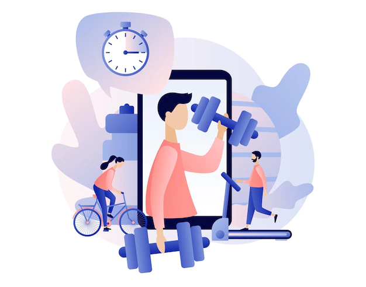

Движение - жизнь!
БИЧ человечества - это ИЛЛЮЗИЯ выбора и ГИПОДИНАМИЯ В 95% случаев чем бы не занялся подопечный, если он до этого мало двигался, ему станет намного лучше (но возможно в краткосрочной перспективе!). В мире более 1,4 миллиарда человек ведут сидячий образ жизни. В России — около 20 миллионов или 17 % взрослого населения!Соответственно из них большой процент составляют программисты!
- Ходить как можно чаще пешком, желательно 10000 шагов в день (важно постепенно увеличивать количество шагов).
- Выполнять упражнения для лимфатической системы: прыжки (прыжки с низкой амплитудой, 3 раза в день, минимум 100 прыжков за подход);
- Приседания в течение дня (30 приседаний 3-4 раза в день)
- Лимфодренажное упражнение “Тараканчик”:ноги вверх (перед сном, ягодицы вплотную к стене, ноги на стену, держим положение 10-20 минут).
- При большом весе, проблемах с суставами - ходьба с опорой на палки (скандинавская), прыжки, приседания - не выполнять!
Физическая активность, необходимая каждому
- Подниматься и спускаться пешком по лестнице, не пользоваться лифтом.
- Регулярно заниматься уборкой (уборка большой квартиры или дома - отличная тренировка)
- Находясь дома, включать энергичную музыку (автоматически будете двигаться больше).
- Если есть дети, чаще включать их в активные игры.
- Заводить будильник на каждый час, вставать на 5 минут: ходить, танцевать, приседать, совершать любую приятную двигательную активность.
- Отслеживать свою активность с помощью приложений (шагомер, фитнестрекер, трекер привычек) - это повышает уровень осознанности и ответственности.
Лайфхаки - как повысить уровень физической активности?


- Повышенная утомляемость после физической нагрузки
- Сильное желание поспать и долгое восстановление.
- Болезненность мышц после аэробной нагрузки.
- Одышка при незначительной физической нагрузке (подъем по лестнице, медленная ходьба).
- Сильное головокружение, тошнота и головная боль. Все эти симптомы могут быть признаками неблагоприятных изменений в организме на клеточном уровне. При таких нарушениях дополнительная физическая нагрузка (занятия в зале, танцы и т.д) будет приводить к нарушениям здоровья.
- Затрудненное дыхание после физической активности, которое долго не удается нормализовать.
- Повышение максимального пульса.
- Слабость и тремор в конечностях.